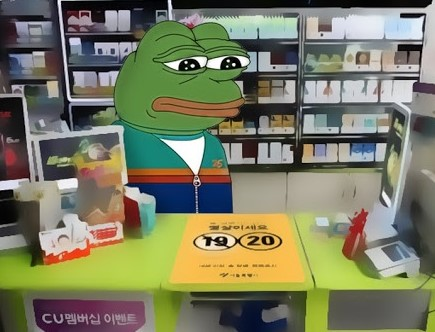

E-mart 24 편돌이

삑 그리고 다음 ya.. 삑 그리고 다음 ae..
3월초부터 시작한 편돌이 알바..
요즘같이 코로나가 기승일때 하기 딱좋은 꿀알바가 아닐까?
- 8600원의 시급!
- 주휴수당과 중식비5000원!
- 주5일 평일오전근무!
내가봐도 ㅅㅌㅊ인듯... 대신에 회사건물안에 있어서 평일에는
출근하는 사람들이 좀 많이온다.
5일간 교육받고 내일부터 혼자서 근무하는데 괜찮겠지 ..?
편돌이의 장점을 잠깐 적어보자면, 일단 편해
하는일이 별로없어서 쉬는시간이많음. 그래서 공부를하거나 폰을하며 시간을
보내곤 하지.
특히 이마트24는 튀김류가 없어서 비교적 꺠끗한 환경에서 근무가능 ㅎ